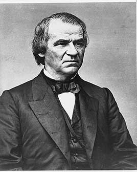

Party colors follow the site's ideology adjustment: before 1897, Democrats were generally the more conservative party, so they are shown in red and Republicans in blue.
A Tennessee Democrat who stayed loyal to the Union and was put on Lincoln's 1864 ticket. After the assassination he pardoned most former Confederates and let Southern states rejoin with governments that passed 'Black Codes'. He vetoed the Civil Rights Act of 1866 and the Freedmen's Bureau bill, and Congress overrode him. He opposed the 14th Amendment. He was the first president impeached and was acquitted by one vote. The purchase of Alaska happened on his watch.
Shaded areas show the years in office, with a few years before and after for comparison. Budget years ran July to June until 1976 (now October to September), so each year's figures cover parts of two calendar years.
June 30, 1864 (end of fiscal 1864): $1.82 billion → June 30, 1868 (end of fiscal 1868): $2.61 billion
Daily debt figures don't exist before 1993, so Johnson's numbers use the fiscal years closest to his term, the same rule as every other page. Almost all of the rise came in fiscal 1865 (July 1864 to June 1865), the last year of the war, which was mostly Lincoln's; from June 1865 to June 1868 the debt fell from $2.68 billion to $2.61 billion.
Debt as a share of GDP. Above 100% means the debt is bigger than a year of everything the country produces.
Money borrowed each budget year (below the line) or paid down (above). The White House budget office's yearly figures begin in 1901.
No national estimates before 1890. Economist Stanley Lebergott's yearly estimates, the earliest national series, begin in 1890
How much prices rose each year (consumer price index).
What everyday prices and paychecks did while in office.
Prices use the consumer price index (MeasuringWorth). The minimum wage is the federal rate set by Congress.
79 orders. Count from the American Presidency Project.
Yearly counts aren't reliable for this era. Orders were not numbered until 1907, when the State Department numbered the ones already in its files, and many orders were never numbered at all, so only the total is shown.
Source: American Presidency Project: executive orders (full list of every order).
Most orders in this era were routine, such as setting aside public land or exempting jobs from civil service rules.
A pardon wipes out the punishment for a federal crime; a commutation shortens a sentence but leaves the conviction. The Justice Department's published counts begin in 1900. Besides four amnesty proclamations for former Confederates (the last, on Christmas 1868, covered everyone), he granted roughly 13,500 individual pardons to Confederate leaders and wealthy planters who applied.
The Justice Department's published clemency counts begin in fiscal 1900, so there are no reliable yearly totals for this presidency.
Source: U.S. Dept. of Justice, clemency statistics, which lists every recipient with the crime and sentence.
The crime: Conspiracy in Lincoln's assassination: he set John Wilkes Booth's broken leg and hid what he knew (military commission, 1865)
Sentence: Life in prison; served nearly four years
Why it drew attention: Pardoned for his work fighting a yellow fever outbreak at the Fort Jefferson prison. Johnson also pardoned two other conspirators, Samuel Arnold and Edman Spangler, in his last weeks.
SourceThe crime: Treason and rebellion
Sentence: None imposed
Why it drew attention: His final proclamation granted a full, unconditional pardon to everyone who took part in the rebellion, including Jefferson Davis.
SourceThe same checklist for every president. Tap a row for details and sources.
The House impeached him in February 1868 on 11 articles, mainly for firing War Secretary Edwin Stanton in violation of the Tenure of Office Act. The Senate voted 35–19 to convict, one vote short of two-thirds.
SourceNever charged.
No member of his cabinet or White House staff was convicted.
None were appointed.
No official investigation found he used federal agencies against opponents. The Supreme Court later ruled the Tenure of Office Act unconstitutional (1926).
What happened, what was proven, and how it ended.
Congress's Radical Republicans impeached Johnson for removing Stanton without Senate approval and for speeches attacking Congress. Many historians see the charges as a proxy for the fight over Reconstruction.
Outcome: Acquitted by one vote; he served out his term.
SourceJohnson let Southern states rejoin under governments that passed Black Codes restricting freed people's work and movement, returned confiscated land to planters, and vetoed civil rights and Freedmen's Bureau bills.
Outcome: Congress overrode his vetoes, passed the 14th Amendment and took over Reconstruction in 1867.
SourceOn a speaking tour before the midterms, Johnson traded insults with hecklers and accused Radical Republicans of treason.
Outcome: Republicans won veto-proof majorities; the speeches became the basis for an article of impeachment.
SourceWidely quoted remarks, with the context they were said in.
Treason must be made odious, and traitors must be punished and impoverished.
In the progress of nations negroes have shown less capacity for government than any other race of people.